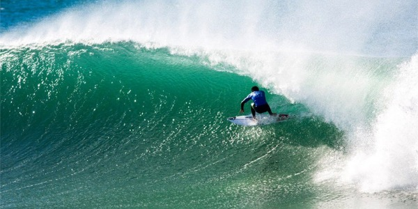
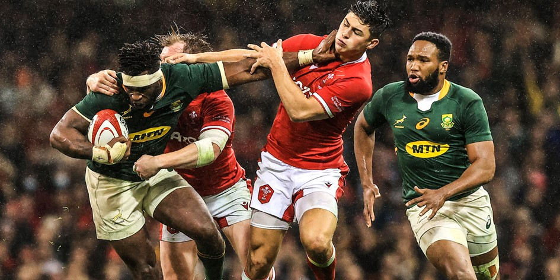
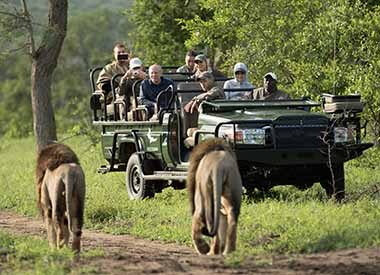
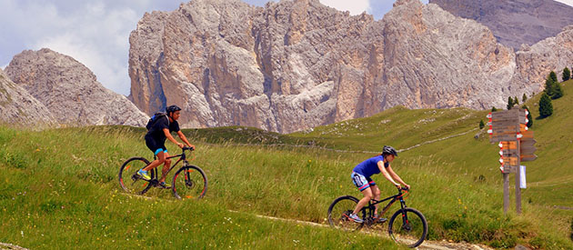

Sports & Activities
South Africa offers a wide range of sports and recreational activities. Surf the waves at Jeffreys Bay, experience the passion of rugby, or embark on an exciting safari adventure to spot the Big Five.
For adrenaline lovers, mountain biking, kite surfing, and trail running are popular options. Whether you seek competitive sports or active leisure, South Africa’s landscapes and facilities cater to all kinds of adventurers.